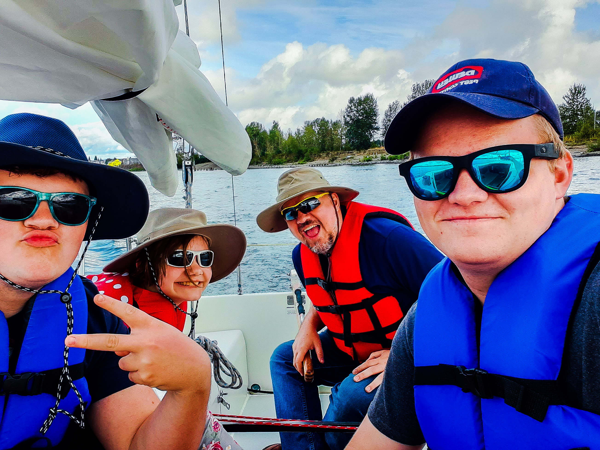

My Name is Eric Poole and I am currently studying computer science at Brigham Young University Idaho. I’m proficient in Python as long C# and website building, I built this website and have a basic understanding of html, along with css. Among computer programing languages I also know American Sign Language, and can hold conversations in ASL.
How can I help your company? Strong Team Player. Studies program on their own. Helpful, and teachable. Can be a leader or a follower. Punctual and on time. I have a strong volunteering presence, I have worked with libraries, and day camps, to help bring books, and fun to people who need it.
How can I help your company? Your company, I don’t know what your company will be doing, however I do know that I will be punctual, friendly, a team player, and easy to teach. Because this is how most of my past job experiences have been like. The people that don’t like me usually I like to talk to and ask how I can better help them, even if they aren’t a huge fan of my personality, we can still get along.